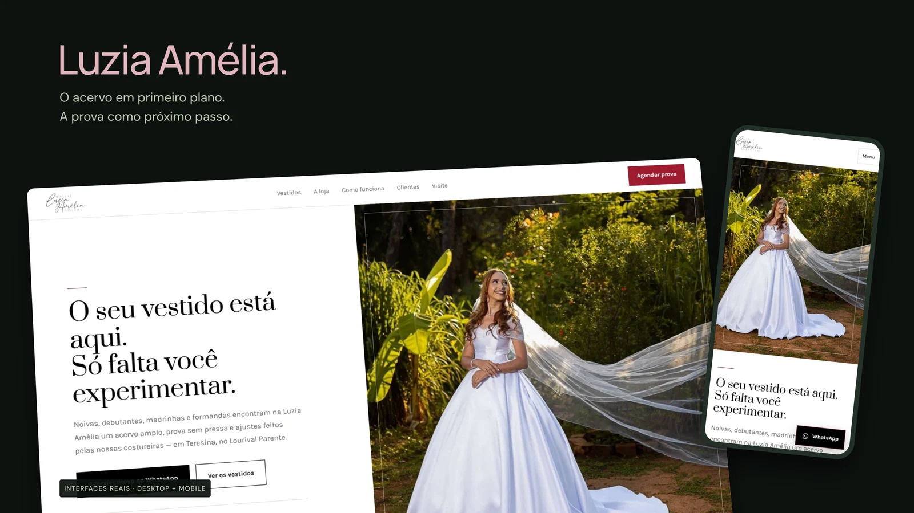
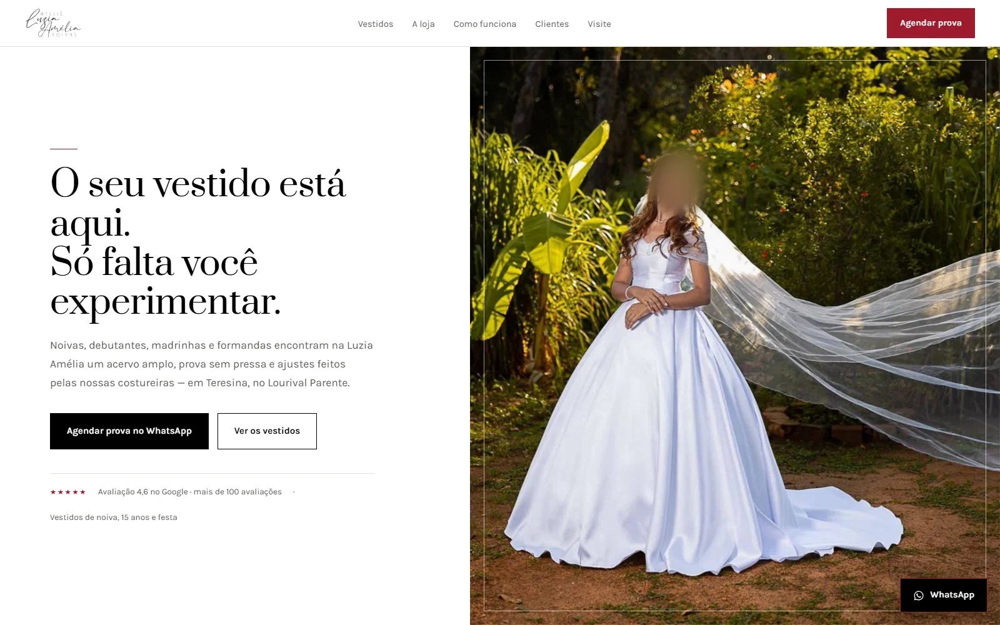
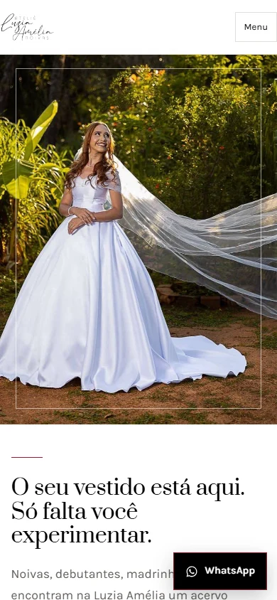
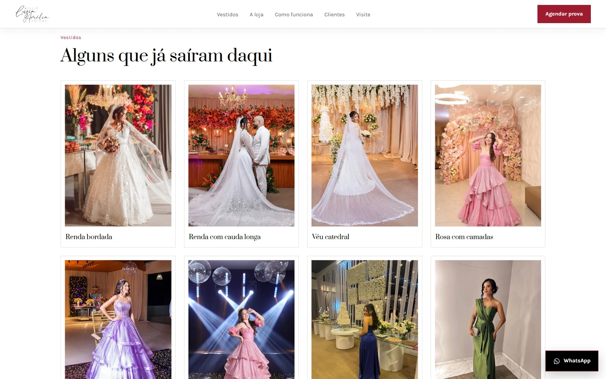

Luzia Amélia Noivas.
O acervo em primeiro plano.
A prova como próximo passo.
Conceito finalizado para prospecção
- Desafio
- Apresentar o acervo e preservar o contexto do vestido até o contato.
- Minha contribuição
- Desenvolvi coleção responsiva, etapas de atendimento, FAQ e links específicos por vestido.
- Resultado / melhoria
- A mensagem de contato já identifica a peça escolhida. Sem resultados de vendas, provas ou conversão mensurados.

Composição original com master 4K, feita a partir das interfaces reais do projeto. Os enquadramentos não representam dispositivos físicos fotografados.
Estudo de landing page desenvolvido para prospecção.
O vestido conduz
a composição.
Uma landing page editorial para apresentar o acervo e explicar o caminho até uma prova. Prata nos títulos, Karla no texto, fundo claro e vermelho escuro sustentam uma direção visual contida, com protagonismo das fotografias.
O que construí
O site estático reúne coleções, apresentação da loja, etapas de atendimento, perguntas frequentes e contato. Cada vestido possui um link de WhatsApp com contexto da peça; no mobile, um menu recolhido mantém a navegação acessível.
Uma página.
Dois ritmos de leitura.
Capturas reais da versão existente, em desktop e celular. A apresentação do Portfolio preserva a identidade do site sem substituir sua interface por um conceito inventado.


Fotografia antes de catálogo.
A coleção usa as fotografias do pacote original em um conjunto visual consistente. É uma apresentação de acervo, não uma loja virtual com carrinho ou sistema de estoque.

Da descoberta
à prova do vestido.
Uma experiência editorial que valoriza o acervo e transforma a curiosidade em um caminho claro de atendimento.
Direção visual
Títulos em Prata, texto em Karla e vermelho escuro compõem uma identidade elegante. O ritmo da página deixa as fotografias conduzir a leitura.
Contato com contexto
Os vestidos possuem links de WhatsApp com a peça já identificada. Etapas de atendimento e perguntas frequentes ajudam a preparar a conversa e a prova.
Continuidade no celular
O acervo se adapta à tela menor e o menu recolhido preserva espaço para as imagens. Conteúdo, orientação e contato permanecem no mesmo percurso.